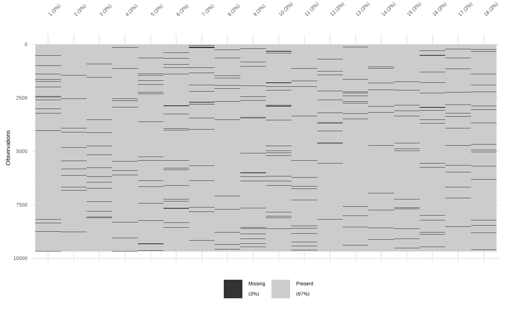
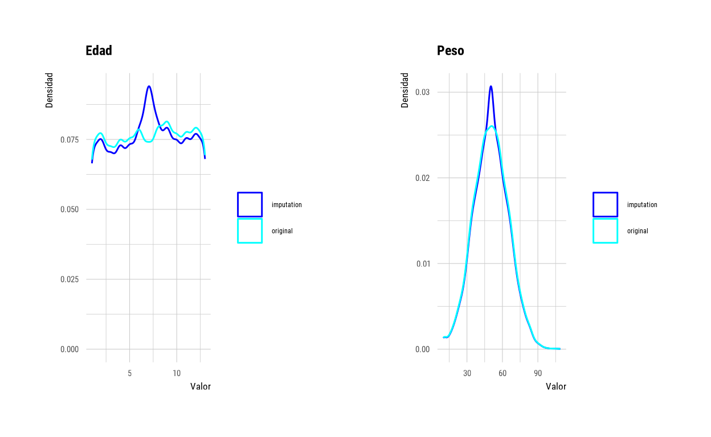
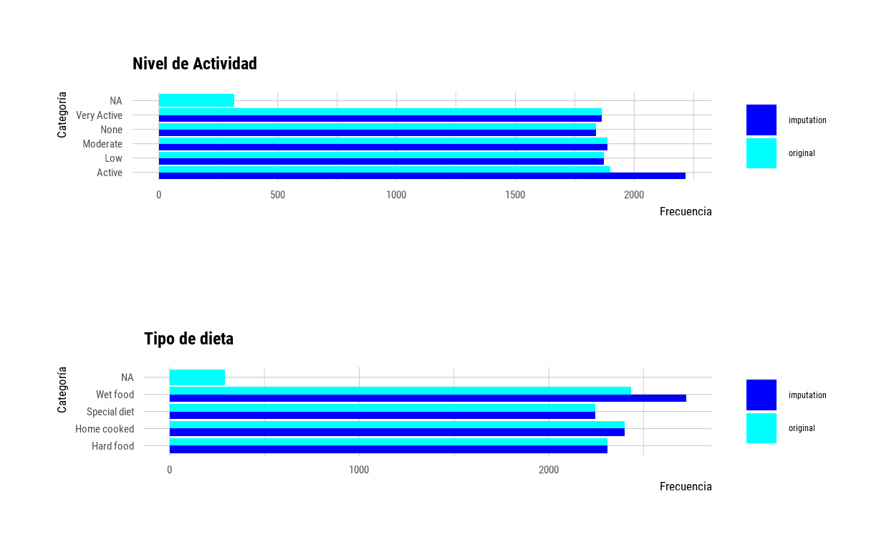
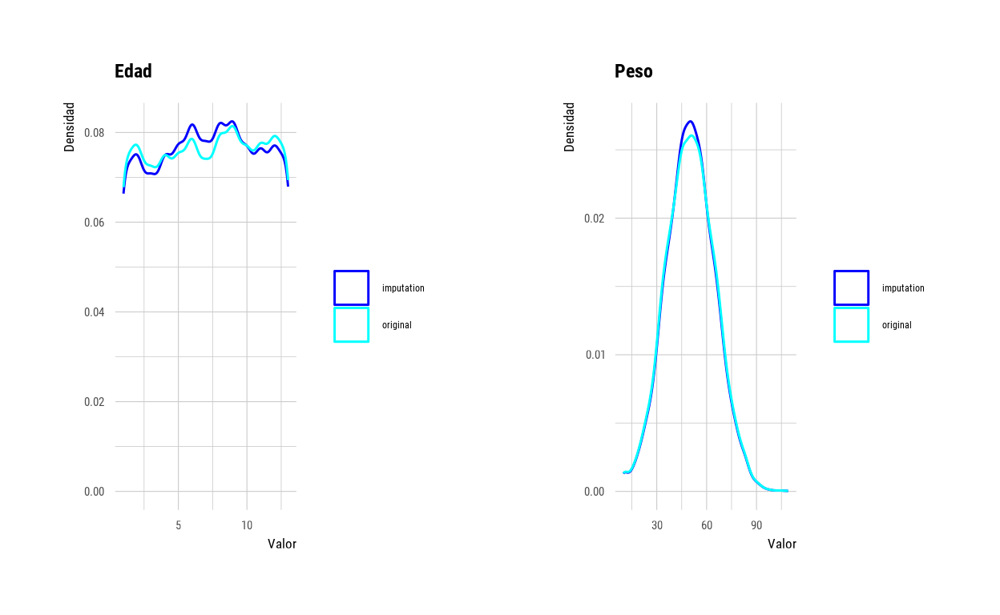
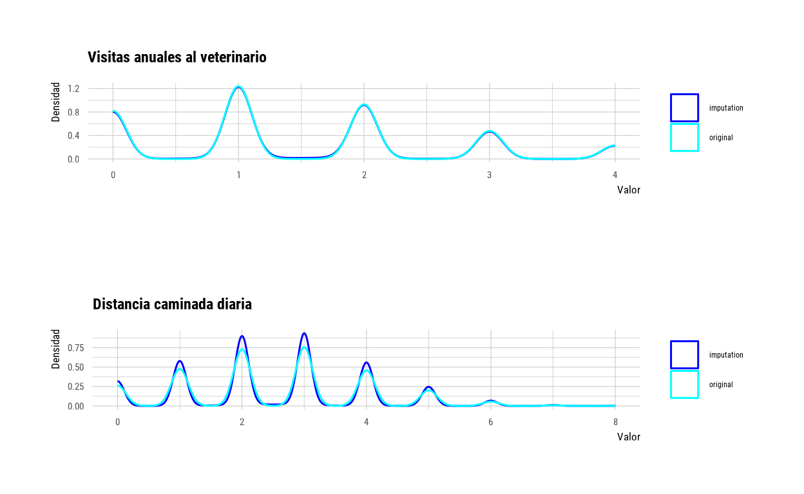
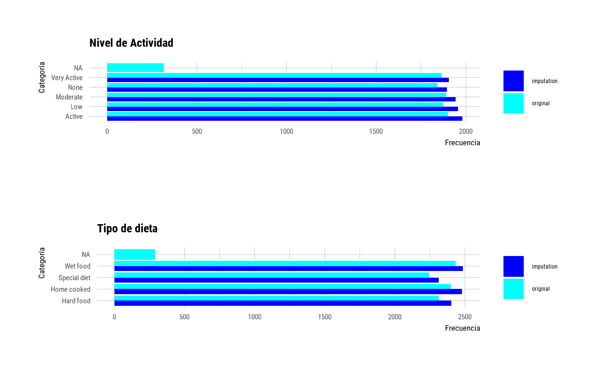
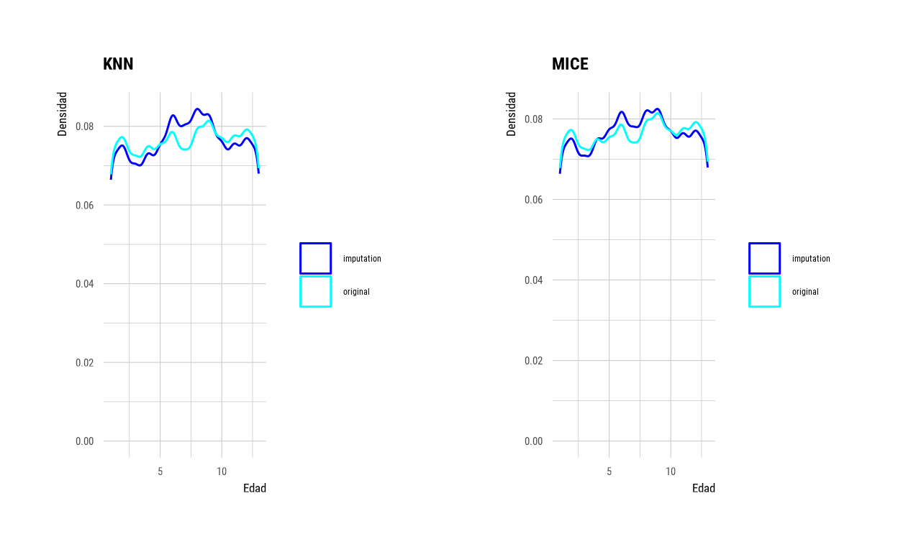

Esto está lleno de agujeros…
Los casos incompletos están presentes en cualquier investigación, simple y sencillamente porque la recogida de datos no es siempre perfecta. El aprendizaje automático puede ayudarnos a estimar los valores ausentes para cada variable de nuestros casos incompletos.
Estimar de la forma más precisa posible los valores de los casos incompletos nos permite:
- Aprovechar el 100% de nuestros casos en lugar de tener que centrar nuestro análisis únicamente en los casos completos, lo que es especialmente importante si tenemos un tamaño de muestra reducido.
- Preparar nuestros datos para tareas más complejas de aprendizaje automático.
- Crear grandes bases de datos agrupando datos de diferentes fuentes, recogidos por distintas técnicas y en diferentes momentos; bases de datos que por la propia naturaleza de la agrupación contienen un alto porcentaje de casos incompletos.
La tabla de datos “Canine Wellness” de Kaggle es un conjunto de datos sintéticos que simulan las características de una amplia gama de razas de perros. Los datos se generaron para reflejar una distribución natural de distintas variables relacionadas con las características, estilos de vida y salud de distintas razas de perros. Las variables de esta tabla de datos son:
- raza (16 razas distintas)
- tamaño (pequeño, mediano, grande)
- sexo
- edad
- peso
- esterilización (sí/no)
- tipo de dieta (dura, húmeda, casera, especial)
- marca de comida (10 marcas distintas)
- nivel de actividad diaria (inactivo, bajo, moderado, alto, muy alto)
- distancia caminada diaria
- nivel de actividad diaria del propietario (inactivo, bajo, moderado, alto, muy alto)
- horas de sueño
- tiempo de juego
- otras mascotas en el domicilio (sí/no)
- medicación (sí/no)
- espasmos (sí/no)
- número de visitas anuales al veterinario
- temperatura corporal media
Estadísticas de los agujeros
La tabla de datos “Canine Wellness” incluye, como parte de la simulación, fallos en la recogida de datos, que se traducen en casos incompletos.
La Figura 1 muestra la distribución de casos incompletos para cada una de las 18 variables de la tabla de datos. En esta figura podemos ver que los valores ausentes se distribuyen de forma aleatoria en toda la tabla y representando aproximadamente el 3% los datos de CADA UNA de las variables.

Figura 1. Distribución de casos incompletos. Missing, valores ausentes; Present, valores existentes.
Aunque el 3% parece ser un porcentaje trivial, si eliminásemos todos los casos a los que les falta una medición en CUALQUIERA de las 18 variables tendríamos que deshacernos de 5580 de 9678 casos, lo que representa más del 50%.
La presencia de casos incompletos es natural en el mundo real; ocurre en cualquier investigación, independientemente de su naturaleza. Es parte de la ciencia. ¿Cómo lidiamos con ello?
¿Tiramos a la basura el 50% de todos nuestros registros? O… ¿podemos hacer algo mejor?
¿Cómo tapamos todos esos agujeros?
¿Probamos con la media y la moda?
Una proximación común para lidiar con casos incompletos es usar la media y la moda para sustituir los valores ausentes de variables continuas o nominales, respectivamente. Sin embargo, como veremos a continuación, estas dos aproximaciones generan sesgos importantes en la distribución de nuestros datos.
Para realizar la sustitución de casos, incompletos y comparar distintos métodos, hemos usado la librería dlookr de R.
En el lenguaje de programación R, el código para estimar los valores ausentes de una variable es bastante sencillo:
dlookr::imputate_na(DF, var, method = "method"),
siendo, DF la tabla de datos, var la variable con valores ausentes que se quieren estimar y method el método que se va a utilizar para hacer la estimación. En este post hemos usado la media (method = “mean”) y la moda (method = “mode”) y los agoritmos MICE (method = “MICE”) o KNN (method = “knn”) para hacer esta estimación.
La Figura 2 muestra la distribución de dos variables numéricas continuas, edad y peso, antes y después de la sustitución de los valores ausentes con la media de cada variable.

Figura 2. Distribución de los valores de dos variables numéricas continuas antes (“original”) y después de la sustitución (“imputation”) de los valores ausentes con la media de cada variable.
En la Figura 2 podemos ver que sustituir los valores ausentes por la media de cada variable genera un sesgo importante en la distribución de los datos, que es mucho más drástico en el caso de la variable “edad”.
La Figura 3 muestra la distribución de dos variables numéricas discretas, número de visitas anuales al veterinario y distancia caminada diaria (en millas), antes y después de la sustitución de los valores ausentes con la media de cada variable.

Figura 3. Distribución de los valores de dos variables numéricas discretas antes (“original”) y después (“imputation”) de la sustitución de los valores ausentes con la media de cada variable.
En la Figura 3 vemos que el sesgo introducido por la sustitución de valores ausentes con la media de cada variable altera la distribución de los datos, introduciendo una pequeña proporción de datos con valores decimales que no estaban presentes en la distribución original.
La Figura 4 muestra la distribución de frecuencias dos variables nominales, nivel de actividad y tipo de dieta, antes y después de la sustitución de los valores ausentes con la moda de cada variable.

Figura 4. Distribución de los valores de dos variables nominales antes (“original”) y después (“imputation”) de la sustitución de los valores ausentes con la moda de cada variable. NA, valores ausentes; Very active, muy activo; None, sin actividad; Moderate, moderadamente activo; Low, poco activo; Active, activo. Wet food, comida húmeda; Special diet, diete especial; Home cooked, comida casera; Hard food, pienso rígido.
En la Figura 4 podemos ver el sesgo introducido por la sustitución de valores ausentes con la moda de cada variable nominal. Como era de esperar, tras la sustitución, hay un aumento en la frecuencia de una sola categoría dentro de cada variable.
Sustituyendo los casos incompletos con ratones (MICE)
El algoritmo (MICE, Multivariate Imputation by Chained Equations) es una técnica de aprendizaje automático que nos ayuda a “recuperar” la información de los casos incompletos para todas nuestras variables.
El algoritmo MICE ejecuta una serie de modelos de regresión de forma recursiva para cada variable, usando todas las otras variables de nuestro conjunto de datos, de acuerdo a su distribución; por ejemplo, las variables binarias se pueden modelar utilizando regresión logística y las variables continuas se pueden modelar mediante regresión lineal. Estos modelos se utilizan entonces para estimar los valores ausentes de cada variable para cada uno de los casos incompletos.
Una gran ventaja del algoritmo MICE es que conserva la distribución de los datos originales, evitando los sesgos introducidos por la sustitución de casos incompletos por la media o la moda, como vimos en las Figuras 2-4.
En la práctica, el uso del algoritmo MICE representa una especie de “recuperación de la información”, que nos ayuda a aprovechar nuestros datos al máximo, a pesar de posibles errores en la recogida de datos.
Otra de las grandes ventajas del algoritmo MICE es que trabaja sin problemas con tablas de datos que mezclan variables nominales, binarias, ordinales, continuas y discretas.
La Figura 5 muestra la distribución de las dos variables numéricas continuas, edad y peso, antes y después de la sustitución de los valores ausentes usando el algoritmo MICE.

Figura 5. Distribución de los valores de dos variables numéricas continuas, antes (“original”) y después (“imputation”) de la sustitución de los valores ausentes usando el algoritmo MICE.
La Figura 5 muestra que, a diferencia de la sustitución de casos incompletos con la media (Fig. 2), el algoritmo MICE respeta la distribución original de los datos.
La Figura 6 muestra la distribución de las dos variables numéricas discretas, visitas anuales al veterinario y distancia diaria caminada, antes y después de la sustitución de los valores ausentes usando el algoritmo MICE.

Figura 6. Distribución de los valores de dos variables numéricas discretas, antes (“original”) y después (“imputation”) de la sustitución de los valores ausentes usando el algoritmo MICE.
En la Figura 6 vemos que, a diferencia de la sustitución de los valores ausentes con la media (Fig. 3), el algoritmo MICE respeta la distribución original de los datos y no introduce mediciones con valores decimales.
La Figura 7 muestra la distribución de las dos variables nominales, nivel de actividad y tipo de dieta, antes y después de la sustitución de los cvalores ausentes usando el algoritmo MICE.

Figura 7. Distribución de los valores de dos variables numéricas nominales, antes (“original”) y después (“imputation”) de la sustitución de los valores ausentes usando el algoritmo MICE. NA, valores ausentes; Very active, muy activo; None, sin actividad; Moderate, moderadamente activo; Low, poco activo; Active, activo. Wet food, comida húmeda; Special diet, diete especial; Home cooked, comida casera; Hard food, pienso rígido.
La Figura 7 muestra que, a diferencia de la sustitución de los valores ausentes con la moda (Fig. 4), el algoritmo MICE respeta las sutiles diferencias en la distribución de los datos, sin incrementar la frecuencia de una sola categoría.
Comparación de MICE con el popular algoritmo KNN
El algoritmo KNN es uno de los más populares para estimar los valores de distintas variables de los casos incompletos, como hicimos arriba con el algoritmo MICE. El algoritmo KNN funciona encontrando los puntos de datos que son más similares (vecinos más cercanos) a un punto nuevo no visto antes. En este caso “similares” significa tener valores cercanos en gráficos n-dimensionales, donde cada dimensión (o eje) se corresponde con una variable.
En el algoritmo KNN, la estimación de valores desconocidos para un caso y una variable se hace a partir de los valores para esa variable de todos los casos conocidos. KNN funciona siempre que exista similitud entre el caso nuevo y los casos conocidos (los vecinos cercanos) para el resto de las variables.
A pesar de su popularidad, en ocasiones, el algoritmo KNN no respeta la distribución de los datos originales.
La Figura 8 muestra una comparación de la distribución de la variable edad, antes y después de la sustitución de valores ausentes a través de MICE y KNN.

Figura 8. Distribución de la variable edad, antes (“original”) y después (“imputation”) de la sustitución de los valores ausentes usando el algoritmo MICE o KNN.
Como podemos observar, aunque en general el algoritmo KNN respeta la distribución de los datos originales, hay un desfase significativo entre la distribución original y la que contiene las estimaciones, dentro de los valores de edad de 5 a 10 años. En contraste, el algoritmo MICE respetó la distribución original de los datos en todo el rango de valores de edad.
Con MICE, ¿es todo miel sobre hojuelas?
Como ya vimos, MICE nos permite estimar los valores de las variables de los casos incompletos manteniendo una distribución de datos muy cercana a la distribución original.
El algoritmo MICE puede además trabajar con todo tipo de variables; lo que representa una ventaja significativa sobre KNN que únicamente admite variables numéricas.
Una pequeña desventaja del algoritmo MICE es que es “computacionalmente costoso”; es decir, necesita mayor poder de procesamiento que la sustitución de los casos incompletos con la media o la moda, e incluso que el algoritmo KNN. Esto se traduce en un análisis de datos más lento en equipos de bajos recursos (equipos con poca memoria RAM y/o procesadores más lentos).
Para que la sustituciones de valores en los casos incompletos sea efectiva y realista ES INDISPENSABLE asegurarnos de que los los valores ausentes para nuestras variables se distribuyan al azar; por ejemplo, que no falten únicamente los valores más altos o más bajos, o sólo los valores dentro de un cierto rango.
Si los datos ausentes no se distribuyen al azar, nos arriesgamos a introducir sesgos importantes en nuestros datos tras estimar los valores ausentes usando el algoritmo MICE para completar nuestros casos.
Es además importante tener en cuenta que el algoritmo MICE requiere que cada variable esté etiquetada según su naturaleza; es decir como variables continuas, discretas, nominales u ordinales.
Conclusiones y aplicaciones interesantes
Como ya vimos, el algoritmo MICE nos permite “recuperar” información estimando los valores ausentes de todas nuestras variables para todos los casos incompletos, manteniendo una distribución de datos cercana a la distribución original.
Estas estimaciones nos ayudan a sacar el máximo provecho a nuestros datos, pues nos evitan tener que desechar los casos incompletos para poder realizar cualquier tipo de análisis estadístico, o tareas complejas de aprendizaje automático.
Además de utilizarse para para completar la información de casos en estudios puntuales, el algoritmo MICE se ha utilizado en el contexto de investigación sanitaria y epidemiológica para crear grandes bases de datos centralizadas agrupando datos provenientes de múltiples fuentes (e.g., distintos centros sanitarios), recogidos con diferentes técnicas (e.g., encuestas o registros médicos), en distintas etapas de la admisión, tratamiento y alta de los pacientes y en distintos momentos (i.e., distintos años). Véanse por ejemplo He et al. (2009) y Stuart et al. (2009). Usando los datos de una encuesta de salud pública, Zeng (2009) ha estimado que el algoritmo MICE puede resultar efectivo para estimar los valores faltantes de hasta un 15% de los casos.
El algoritmo MICE puede utilizarse para crear grandes bases de datos que agrupen datos provenientes de diferentes fuentes y recogidos en diferentes momentos y que, por la propia naturaleza del agrupamiento, contengan una proporción considerable de valores ausentes en una o múltiples variables.
El código completo de este análisis está disponible en el repositorio de La Casa de Datos en Github.